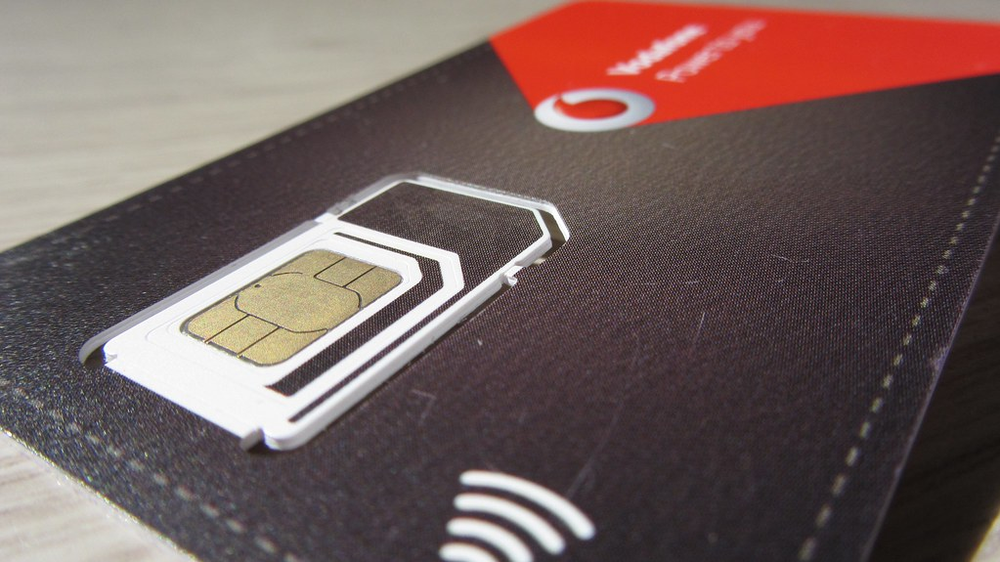

NFC
¿QUÉ ES Y QUÉ HACE?
NFC (Near Field Communication) es una tecnología inalámbrica de alta frecuencia, la cual usa un campo electromagnético generado mediante inducción. Nos permite recibir señales así como enviarlas.
Tienen su origen en las tarjetas RFID, que son los chips que solemos encontrar en las tiendas en los productos para evitar que sean extraídos maliciosamente.
Si hablamos acerca del dispositivo, estamos hablando de tarjetas que poseen un chip como ésta:
¿PARA QUÉ SE USA?
- IDENTIFICACIÓN:
Nos sirve para validar nuestros datos personales, como para poder entrar a determinados recintos.
- TRANSFERENCIA DE DATOS:
Aunque no es su uso habitual, nos permite transferir datos y recibir datos, como nuestra geolocalización, eventos inminentes, etc.

- SINCRONIZACIÓN DE DISPOSITIVOS:
Podemos usarlos para conectarnos con unos altavoces, unos cascos, etc. sin tener que pasar por la conexión al bluetooth y tener que esperar a que los dispositivos se vinculen.
- PAGO CON TELÉFONO MÓVIL:
Si tenemos la tarjeta bancaria vinculada al móvil, podemos pagar con él sólo acercando el móvil al datáfono. Hasta la llegada de Bizum era la forma más usada de pago digital, y es sin duda, su uso más común.
- AUTOMATIZACIÓN DE TAREAS:
Podemos tener las tarjetas en la casa o en cualquier lado y que estén escritas con una serie de programas que, por ejemplo, si acercamos el móvil a la tarjeta nos ponga el móvil en silencio y nos configure y active una alarma.
TIPOS
En el mercado podemos encontrar cinco tipos de etiqueta que sigan el éstandar de NFC Fórum (organismo encargado de la estandarización):
-
TIPO 1:
Etiqueta de escritura y lectura y tamaño entre 96 bytes y 2KB.
-
TIPO 2:
Admite escritura y lectura y un modo de sólo lectura. Memoria entre 46 bytes y 2KB.
-
TIPO 3:
Como el tipo 2. Tamaño de memoria de hasta 1MB.
-
TIPO 4:
También como el tipo 2. El tamaño de memoria varía, pero tiene un límite de 32 KB.
-
TIPO 5:
De todos los tipos que cumplen el estandarizado de NFC Fórum éste es el más reciente. Igual que el tipo 2 y un máximo de memoria de 64 KB.
Además de NFC Fórum, hay empresas que crean su propio estándar. Entre ellas, los estándares más destacados son:
-
NTAG:
Son las etiquetas más compatibles con móviles, y las más usuales que nos podemos encontrar son:
- NTAG210.
- NTAG213.
- NTAG215.
Las diferencia más grande entre los chips se encuentra en la memoria disponible (48, 144 y 540 bytes respectivamente).
-
Mifare:
Pertenece a NXP Semiconductors. Los tipos de chip más comunes de Mifare son:
-
Classic:
Es uno de los formatos más antiguos (creado en 1994) y no es compatible con la gran mayoría de dispositivos del mercado ya que se basa en su propio formato. El rango de memoria de éste tipo de etiqueta abarca desde 1KB hasta 4KB.
-
Ultralight:
Es una evolución del anterior basado en el Tipo 2 de NFC Fórum, con una gran compatibilidad con los dispositivos actuales. Tienen una memoria inferior respecto al Classic, llegando a tener 512 bytes.
-
Desfire:
Evoluciona a partir del Ultralight siendo más seguro a nivel software y a nivel hardware, se basan en el estándar Tipo 4 de NFC Fórum. También es compatible con la mayoría de dispositivos, usándose para gestión de pagos así como transporte público. Memoria entre 2 y 6 KB.
FUNCIONAMIENTO
Como hemos dicho anteriormente, éstos dispositivos funcionan a partir de un campo electromagnético creado por inducción a través de las antenas en espiral de dos dispositivos. La tecnología NFC puede funcionar de dos formas:
-
Activa:
Está diseñada para intercomunicar dos dispositivos, puesto que ambos dispositivos crean su propio campo electromagnético.
-
Pasiva:
Sólo un dispositivo crea un campo electromagnético, es decir, el activo, mientras que el otro aprovecha éste campo para transferir datos. Éste es el que se usa para intercomunicar una tarjeta con un dispositivo.
Para poder vincular un dispositivo con otro o con una tarjeta, hay que acercarlo como mínimo a unos 10 cm. Tiene una velocidad máxima de 424 kbit/s, lo que nos permite interconectar nuestro teléfono móvil con una etiqueta en un chasquido.
INSTALACIÓN
EN DISPOSITIVOS MÓVILES
Uno de los inconvenientes con los que nos encontramos a la hora de intentar aplicar ésta tecnología es que nuestro dispositivo móvil venga integrada con ella. Pero no es el fin del mundo. Tenemos una serie de opciones:
-
Comprar una etiqueta NFC y pegarla a nuestro móvil.
-
Cambiar la SIM de nuestro móvil por una con NFC integrado.

EN ORDENADORES
Ésta tecnología está más orientada a dispositivos móviles, pero en caso de que queramos leer o configurar una tarjeta en nuestra computadora, siempre podemos comprar un lector de NFC con conector USB tipo A.